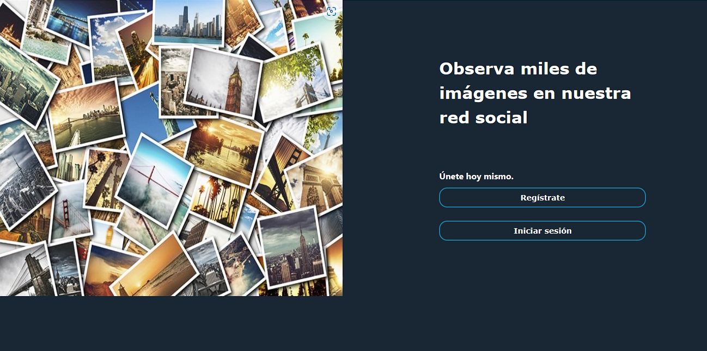

Ingeniero electrónico con conocimientos en el manejo de bases de datos relacionales y no relacionales, así como en el desarrollo de modelos predictivos utilizando técnicas de Machine/Deep Learning. Mi pasión por la tecnología y la innovación me impulsa a buscar constantemente nuevas soluciones a través del aprendizaje automático y el análisis de datos.
PROYECTOS RECIENTES

Skills: Python (OpenCV, Pillow, scikit-learn, matplotlib), Transfer learning, Pytorch, LSTM, Optuna, Sistema embebido
Trabajo de grado donde se presenta el diseño, desarrollo y validación de un sistema para la detección de eventos de robo con imágenes de video implementada en una Jetson Nano. El modelo utilizado es una arquitectura
híbrida, compuesta por redes convolucionales con la función de extracción de las características más importantes en un evento de robo, y redes recurrentes LSTM para
la evaluación de secuencias.

Skills: SQL, HTML, CSS, Python (flask, WSGI), Amazon EC2
Aplicación web implementada en la instancia EC2 de AWS que simula una red social que permite añadir, actualizar, buscar o borrar imágenes. Incluye
las funciones de creación de usuario, inicio de sesión, recuperación de contraseña y su protección.

{kind=link}